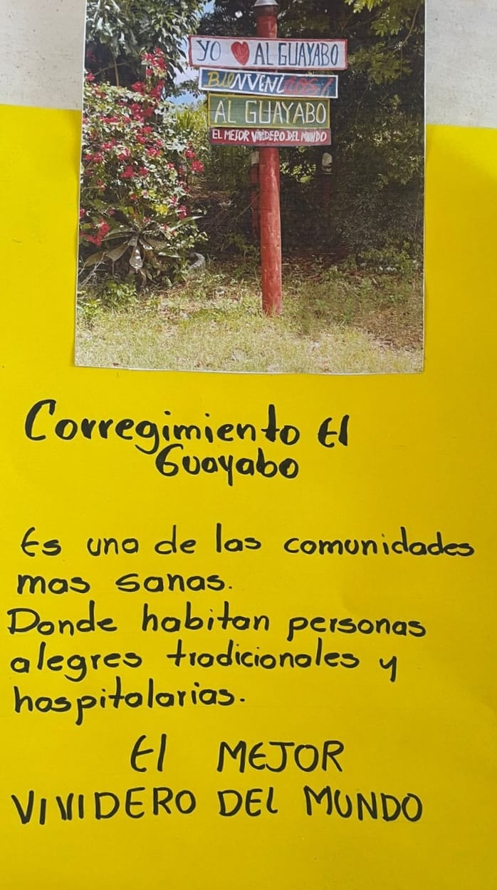
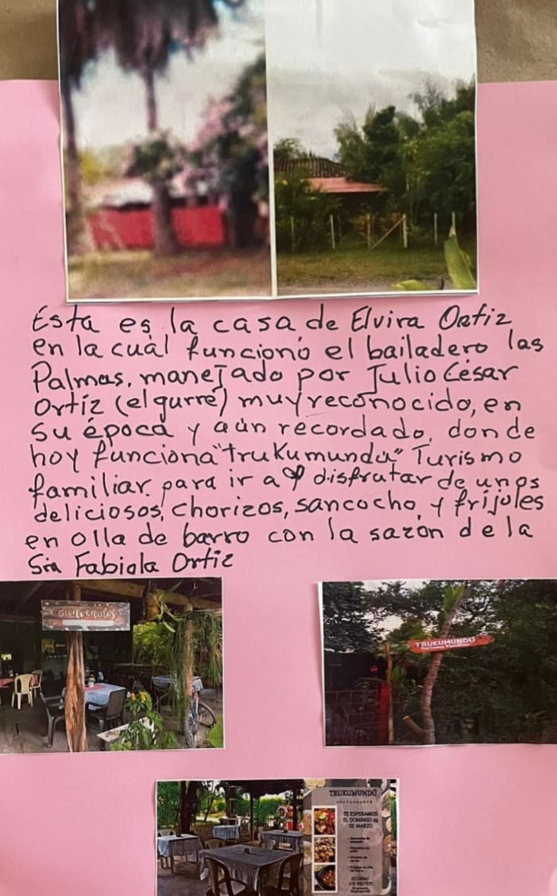
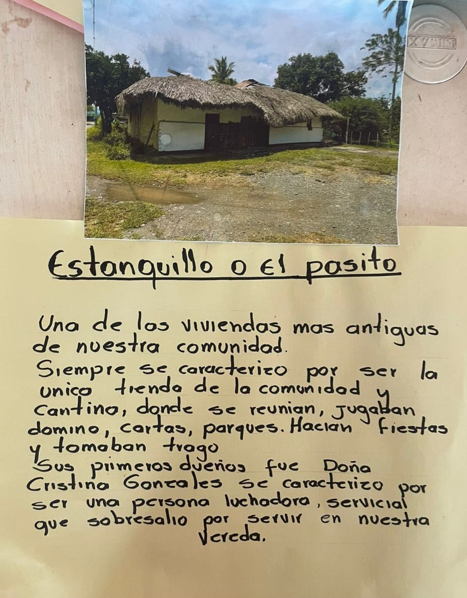
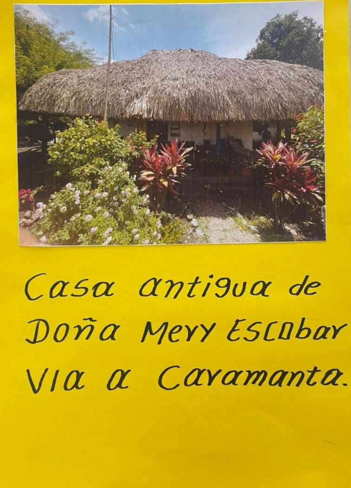
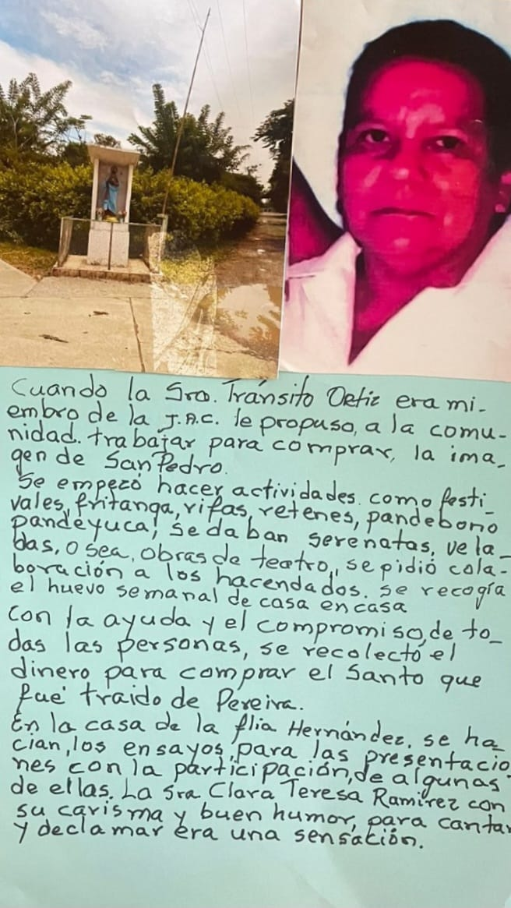
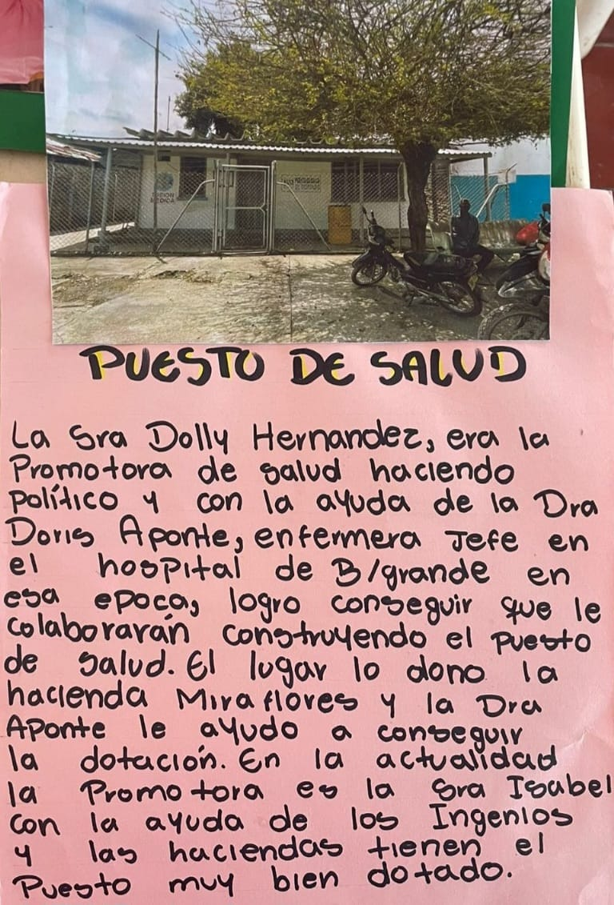
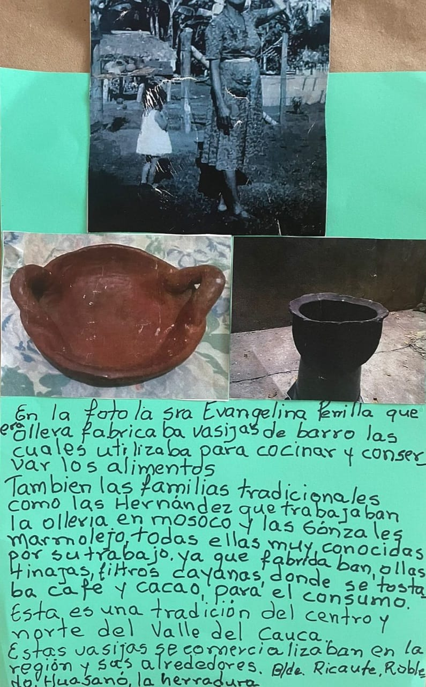
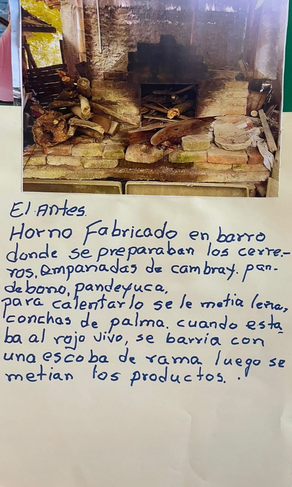

El Guayabo, un lugar lleno de historia

La casa de Elvira Ortiz - Bailadero Las Palmas

El Estanquillo El Pasito

Casa de Doña Merry Escobar

Estatua de San Pedro

Puesto de salud de El Guayabo

Vasijas de barro echas en El Guayabo

Horno de barro antes